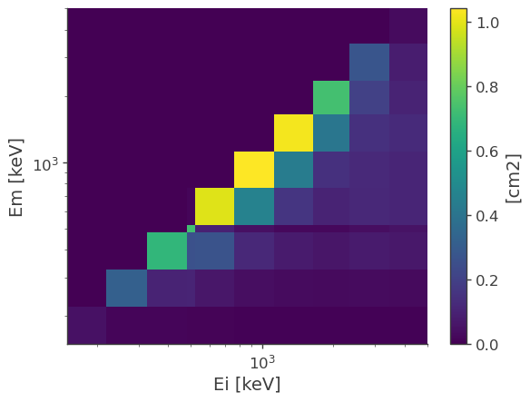
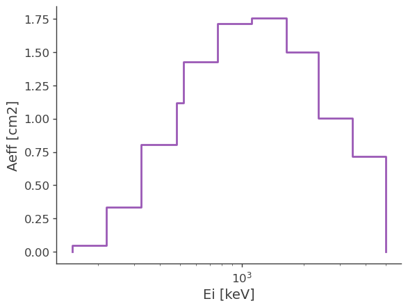
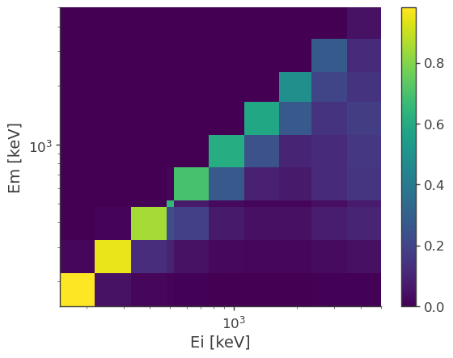
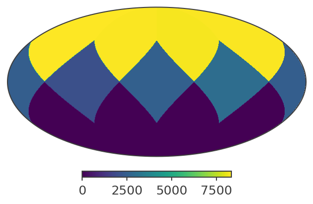
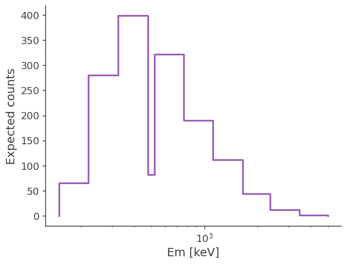
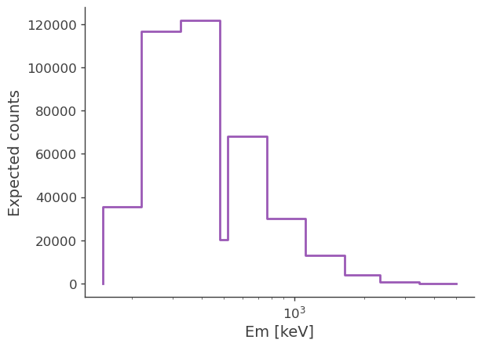
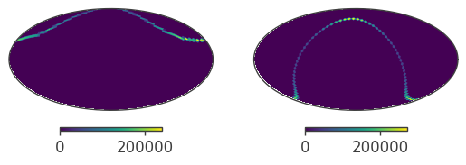
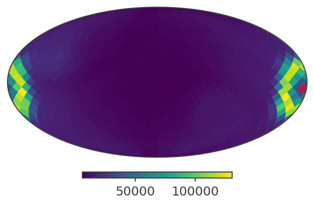
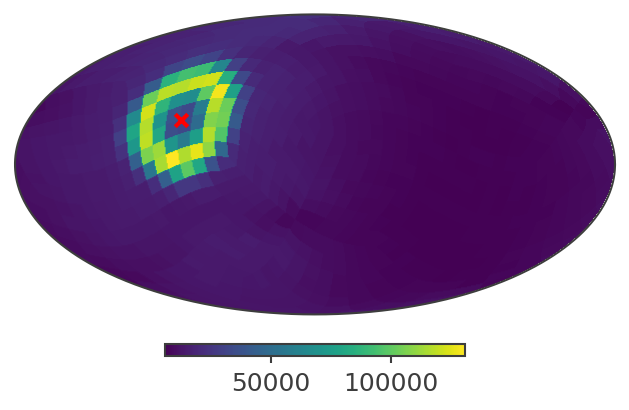
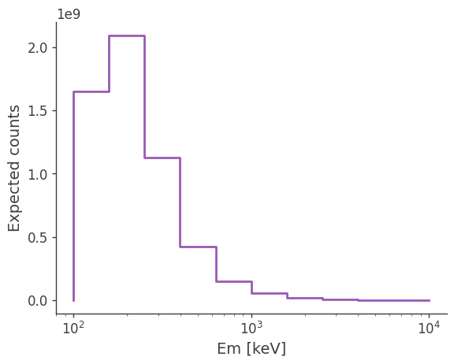

Full detector response
The detector response provides us with the the following information: - The effective area at given energy for given direction. This allows us to convert from counts to physical quantities like flux - The expected distribution of measured energy and other reconstructed quantities. This allows us to account for all sorts of detector effects when we do our analysis.
This tutorial will show you how to handle detector response and extrat useful information from it:
Opening a full detector response
The response of the instrument in encoded in a series of matrices cointained in a file. you can open the file like this:
[3]:
from cosipy import test_data
response_path = test_data.path / "test_full_detector_response.h5"
[4]:
from cosipy.response import FullDetectorResponse
response = FullDetectorResponse.open(response_path)
print(response.filename)
response.close()
/Users/eneights/work/COSI/data_challenge_2/cosipy/cosipy/test_data/test_full_detector_response.h5
Or if you don’t want to worry about closing the file, use a context manager statement:
[5]:
with FullDetectorResponse.open(response_path) as response:
print(repr(response))
FILENAME: '/Users/eneights/work/COSI/data_challenge_2/cosipy/cosipy/test_data/test_full_detector_response.h5'
AXES:
NuLambda:
DESCRIPTION: 'Location of the simulated source in the spacecraft coordinates'
TYPE: 'healpix'
NPIX: 12
NSIDE: 1
SCHEME: 'RING'
Ei:
DESCRIPTION: 'Initial simulated energy'
TYPE: 'log'
UNIT: 'keV'
NBINS: 10
EDGES: [150.0 keV, 220.0 keV, 325.0 keV, 480.0 keV, 520.0 keV, 765.0 keV, 1120.0 keV, 1650.0 keV, 2350.0 keV, 3450.0 keV, 5000.0 keV]
Em:
DESCRIPTION: 'Measured energy'
TYPE: 'log'
UNIT: 'keV'
NBINS: 10
EDGES: [150.0 keV, 220.0 keV, 325.0 keV, 480.0 keV, 520.0 keV, 765.0 keV, 1120.0 keV, 1650.0 keV, 2350.0 keV, 3450.0 keV, 5000.0 keV]
Phi:
DESCRIPTION: 'Compton angle'
TYPE: 'linear'
UNIT: 'deg'
NBINS: 30
EDGES: [0.0 deg, 6.0 deg, 12.0 deg, 18.0 deg, 24.0 deg, 30.0 deg, 36.0 deg, 42.0 deg, 48.0 deg, 54.0 deg, 60.0 deg, 66.0 deg, 72.0 deg, 78.0 deg, 84.0 deg, 90.0 deg, 96.0 deg, 102.0 deg, 108.0 deg, 114.0 deg, 120.0 deg, 126.0 deg, 132.0 deg, 138.0 deg, 144.0 deg, 150.0 deg, 156.0 deg, 162.0 deg, 168.0 deg, 174.0 deg, 180.0 deg]
PsiChi:
DESCRIPTION: 'Location in the Compton Data Space'
TYPE: 'healpix'
NPIX: 12
NSIDE: 1
SCHEME: 'RING'
SigmaTau:
DESCRIPTION: 'Electron recoil angle'
TYPE: 'healpix'
NPIX: 12
NSIDE: 1
SCHEME: 'RING'
Dist:
DESCRIPTION: 'Distance from first interaction'
TYPE: 'linear'
UNIT: 'cm'
NBINS: 1
EDGES: [0.0 cm, 1000.0 cm]
Although opening a detector response does not load the matrices, it loads all the header information above. This allows us to pass it around for various analysis at a very low cost.
Detector response matrix
The full –i.e. all-sky– detector response is encoded in a HEALPix grid. For each pixel there is a multidimensional matrix describing the response of the instrument for that particular direction in the spacefraft coordinates. For this response has the following grid:
[6]:
import numpy as np
import astropy.units as u
with FullDetectorResponse.open(response_path) as response:
print(f"NSIDE = {response.nside}")
print(f"SCHEME = {response.scheme}")
print(f"NPIX = {response.npix}")
print(f"Pixel size = {np.sqrt(response.pixarea()).to(u.deg):.2f}")
NSIDE = 1
SCHEME = RING
NPIX = 12
Pixel size = 58.63 deg
To retrieve the detector response matrix for a given pixel simply use the [] operator
[7]:
with FullDetectorResponse.open(response_path) as response:
print(f"Pixel 0 centered at {response.pix2skycoord(0)}")
drm = response[0]
Pixel 0 centered at <SkyCoord (SpacecraftFrame: attitude=None, obstime=None, location=None): (lon, lat) in deg
(45., 41.8103149)>
Or better, get the interpolated matrix for a given direction. In this case, for the on-axis response:
[8]:
from scoords import SpacecraftFrame
from astropy.coordinates import SkyCoord
with FullDetectorResponse.open(response_path) as response:
drm = response.get_interp_response(SkyCoord(lon = 0*u.deg, lat = 0*u.deg, frame = SpacecraftFrame()))
The matrix has multiple dimensions, including real photon initial energy, the measured energy, the Compton data space, and possibly other:
[9]:
drm.axes.labels
[9]:
array(['Ei', 'Em', 'Phi', 'PsiChi', 'SigmaTau', 'Dist'], dtype='<U8')
However, one of the most common operation is to get the effective area and the energy dispersion matrix. This is encoded in a reduced detector response, which is the projection of the full matrix into the initial and measured energy axes:
[10]:
drm.get_spectral_response().plot();

You can further project it into the initial energy to get the effective area:
[11]:
ax,plot = drm.get_effective_area().plot();
ax.set_ylabel(f'Aeff [{drm.unit}]');

Get the interpolated effective area
[12]:
drm.get_effective_area(511*u.keV)
[12]:
Or the energy dispersion matrix
[13]:
drm.get_dispersion_matrix().plot();

Point source response
One we have the response, usually the next step if to get the expected excess for a specific source. We first mock the path of a source across the field of view of the instrument. This is encoded in another HEALPix map containing the (weighted) time a source spent on each pixel:
[14]:
from mhealpy import HealpixMap
t_tot = 12*u.hr
t_nsamples = 1000
t = np.linspace(0,t_tot,t_nsamples)
theta = t*(180*u.deg/u.day)
phi = t*(180*u.deg/u.hour)
path = SkyCoord(lon = phi, lat = 90*u.deg - theta, frame = SpacecraftFrame())
with FullDetectorResponse.open(response_path) as response:
exposure_map = HealpixMap(base = response,
unit = u.s,
coordsys = SpacecraftFrame())
for coord in path:
# This takes care of the interpolation without having to load the pixel DRM multiple times from file
pixels, weights = exposure_map.get_interp_weights(coord)
for p,w in zip(pixels, weights):
exposure_map[p] += w*t_tot/t_nsamples
In this tutorial we’re using a light but coarse detector response. For a real analysis involving imaging, the pixel size should be appropiate for the angular resolution.
[15]:
# We need to specify an attitude because plot() plots the map into celestial coordinates.
# Here we asume they are aligned with the spacecraft coordinates
from scoords import Attitude
exposure_map.plot(coord = SpacecraftFrame(attitude = Attitude.identity()));

We can now convolve the exposure maps with the full detector response, and get a PointSourceResponse
[16]:
with FullDetectorResponse.open(response_path) as response:
psr = response.get_point_source_response(exposure_map)
Note that a PointSourceResponse only depends on the path of the source, not on the spectrum of the source. It has units of area*time
[17]:
psr.unit
[17]:
Finally, we convolve a spectrum to get the spected excess for each measured energy bin:
[26]:
from threeML import Model, Powerlaw
from astropy.units import Quantity
index = -2.2
K = 10**-3 / u.cm / u.cm / u.s / u.keV
piv = 100 * u.keV
spectrum = Powerlaw()
spectrum.index.value = index
spectrum.K.value = K.value
spectrum.piv.value = piv.value
spectrum.K.unit = K.unit
spectrum.piv.unit = piv.unit
expectation = psr.get_expectation(spectrum)
[19]:
ax, plot = expectation.project('Em').plot()
ax.set_ylabel('Expected counts')
[19]:
Text(0, 0.5, 'Expected counts')

Try changing the spectrum and se how the expected excess changes.
[25]:
index = -3
K = 10**-3 / u.cm / u.cm / u.s / u.keV
piv = 100 * u.keV
spectrum = Powerlaw()
spectrum.index.value = index
spectrum.piv.value = piv.value
spectrum.K.unit = K.unit
spectrum.piv.unit = piv.unit
expectation = psr.get_expectation(spectrum)
ax, plot = expectation.project('Em').plot()
ax.set_ylabel('Expected counts')
[25]:
Text(0, 0.5, 'Expected counts')

Point source response in inertial coordinates
In the previous example we obtained the response for a point source as seen in the reference frame attached to the spacecraft (SC) frame. As the spacecraft rotates, a fixed source in the sky is seen by the detector from multiple direction, so binnind the data on the spacecraft coordinate, without binning it simultenously in time, can wash out the signal. As shown in this section, we can instead rotate the response and convolve it the attitude history of the spacecraft, resulting in a point source response with a Compton data space binned in inertial coordinates.
For this example we’ll use the following files. The links point to wasabi. - SMEXv12.Continuum.HEALPixO3_10bins_log_flat.binnedimaging.imagingresponse.nonsparse_nside8.area.good_chunks_unzip.h5.zip - 20280301_3_month.ori
Uncompress the response and place both of them in any folder that you want and edit the following variable to point there:
[1]:
from pathlib import Path
data_folder = Path("/Users/imartin5/cosi/scratch/inertial_coords/data")
First, let’s read in the detector response, which will serve as reference for the rest of the code
[2]:
from cosipy.response import FullDetectorResponse
response_filename = str(data_folder/"SMEXv12.Continuum.HEALPixO3_10bins_log_flat.binnedimaging.imagingresponse.nonsparse_nside8.area.good_chunks_unzip.h5")
response = FullDetectorResponse.open(response_filename)
16:15:49 WARNING The naima package is not available. Models that depend on it will not be functions.py:48 available
WARNING The GSL library or the pygsl wrapper cannot be loaded. Models that depend on it functions.py:69 will not be available.
16:15:50 WARNING The ebltable package is not available. Models that depend on it will not be absorption.py:33 available
16:15:50 INFO Starting 3ML! __init__.py:35
WARNING WARNINGs here are NOT errors __init__.py:36
WARNING but are inform you about optional packages that can be installed __init__.py:37
WARNING to disable these messages, turn off start_warning in your config file __init__.py:40
WARNING ROOT minimizer not available minimization.py:1345
WARNING Multinest minimizer not available minimization.py:1357
16:15:51 WARNING PyGMO is not available minimization.py:1369
16:15:51 WARNING The cthreeML package is not installed. You will not be able to use plugins which __init__.py:94 require the C/C++ interface (currently HAWC)
WARNING Could not import plugin HAWCLike.py. Do you have the relative instrument __init__.py:144 software installed and configured?
WARNING Could not import plugin FermiLATLike.py. Do you have the relative instrument __init__.py:144 software installed and configured?
16:15:52 WARNING No fermitools installed lat_transient_builder.py:44
16:15:52 WARNING Env. variable OMP_NUM_THREADS is not set. Please set it to 1 for optimal __init__.py:387 performances in 3ML
WARNING Env. variable MKL_NUM_THREADS is not set. Please set it to 1 for optimal __init__.py:387 performances in 3ML
WARNING Env. variable NUMEXPR_NUM_THREADS is not set. Please set it to 1 for optimal __init__.py:387 performances in 3ML
Next, let’s read in the spacecraft orientation file that contains the attitude information versus time:
[3]:
from cosipy import SpacecraftFile
ori = SpacecraftFile.parse_from_file(data_folder/"20280301_3_month.ori")
Since the spacecraft can have the same orientation multiple times, we avoid to rotate the response multiple times by creating a histogram that keeps track of the attitude information. This is the “spacecraft attitude map”, and is a 4D matrix that contain the amount of time that the x and y SC axis were pointing at a given location in inertial coordinates -e.g. galactic.
[4]:
scatt_map = ori.get_scatt_map(nside = response.nside * 2, coordsys = 'galactic')
WARNING ErfaWarning: ERFA function "utctai" yielded 7979956 of "dubious year (Note 3)"
This is a how the 2D projections looks like
[5]:
from matplotlib import pyplot as plt
fig,axes = plt.subplots(ncols = 2, subplot_kw = {'projection':'mollview'})
scatt_map.project('x').plot(axes[0])
scatt_map.project('y').plot(axes[1])
[5]:
(<MollviewSubplot: >, <matplotlib.image.AxesImage at 0x1316a61c0>)

Now we can let cosipy perform the convolution with `` and get the point source response:
[6]:
%%time
from astropy.coordinates import SkyCoord
coord = SkyCoord.from_name('Crab').galactic
psr = response.get_point_source_response(coord = coord, scatt_map = scatt_map)
CPU times: user 47.1 s, sys: 6.18 s, total: 53.3 s
Wall time: 55.7 s
This is how a slice of the response looks like in galactic coordinates:
[7]:
psichi_slice = psr.slice[{'Ei':4, 'Phi':4}].project('PsiChi')
ax,plot = psichi_slice.plot(ax_kw = {'coord':'G'})
ax.scatter([coord.l.deg], [coord.b.deg], transform = ax.get_transform('world'), marker = 'x', color = 'red')
[7]:
<matplotlib.collections.PathCollection at 0x131ddb6d0>

And here in ICRC (RA/Dec), the default coordinates for plot()
[8]:
ax,plot = psichi_slice.plot()
ax.scatter([coord.icrs.ra.deg], [coord.icrs.dec.deg], transform = ax.get_transform('world'), marker = 'x', color = 'red')
[8]:
<matplotlib.collections.PathCollection at 0x131df6df0>

You can also used it the same way as a point source response obtained from a exposure map. e.g.
[9]:
from astropy import units as u
from threeML import Model, Powerlaw
from astropy.units import Quantity
index = -3
K = 10**-3 / u.cm / u.cm / u.s / u.keV
piv = 100 * u.keV
spectrum = Powerlaw()
spectrum.index.value = index
spectrum.piv.value = piv.value
spectrum.K.unit = K.unit
spectrum.piv.unit = piv.unit
expectation = psr.get_expectation(spectrum)
ax, plot = expectation.project('Em').plot()
ax.set_ylabel('Expected counts')
[9]:
Text(0, 0.5, 'Expected counts')

Lastly, you can obtain the response for multiple coordinstes at once. This can be useful for e.g. imaging
[10]:
%%time
from mhealpy import HealpixBase
gal_grid = HealpixBase(nside = 16, coordsys = 'galactic')
gal_coords = gal_grid.pix2skycoord(range(gal_grid.npix))
response.get_point_source_response(coord = gal_coords[10:12], scatt_map = scatt_map)
CPU times: user 1min, sys: 6.69 s, total: 1min 6s
Wall time: 1min 8s
[10]:
(<cosipy.response.PointSourceResponse.PointSourceResponse at 0x132137220>,
<cosipy.response.PointSourceResponse.PointSourceResponse at 0x1321376d0>)
You can see that getting the response for two coordinste takes less than twice the time for a single one.